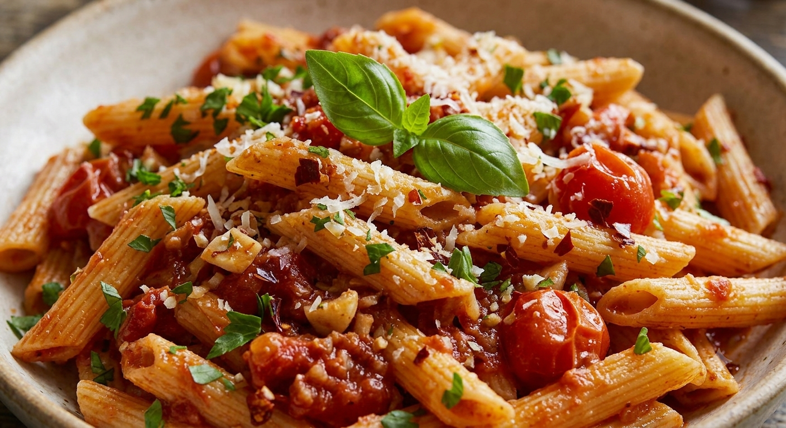
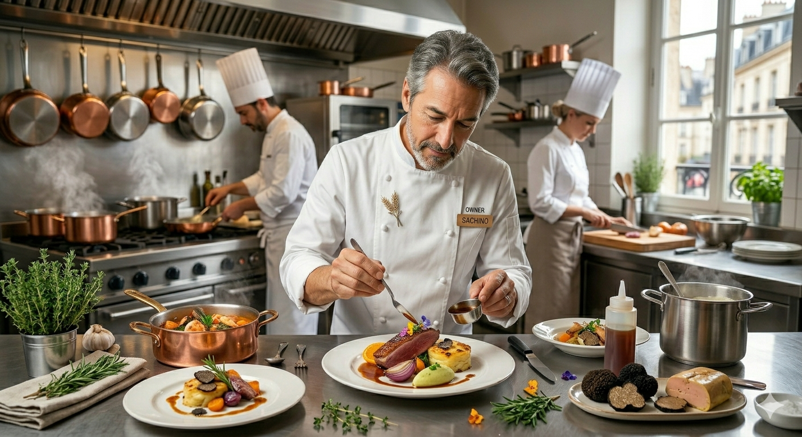

Trattoria Navuona
ローマの風を感じる創造的なイタリアン。
名物「アラビアータ」が、あなたの日常を特別に変える。
ローマの「ナヴォーナ広場」をイメージした創造性あふれる一皿。
ランチ1,000円以内、ディナー2,000円以内。日常使いできる贅沢。
おしゃれでゆったりとした店内。大切な友人やご家族との時間に。

「トマトソースの甘くて優しい味わい」と「ピリッとした辛味」の黄金比。
歯み応えのある太麺がソースと絡み合う、ナヴォーナ究極の逸品。
お客様からの「あったらいいな！」にお応えして、準備を進めている新サービスをご紹介します。
地元の旬食材をふんだんに使った特別メニューが登場！春の山菜パスタ、夏の冷製アラビアータ、秋のキノコ＆ウニの濃厚リゾットなど、その時期にしか味わえない至高のひと皿をお届けします。
✨ 定番人気メニューに加わる新しい楽しみ
「おうちでもナヴォーナのオムライスやハンバーグが食べたい」という声にお応えします！絶品ソースの特製オムライスや肉汁あふれるハンバーグ弁当のテイクアウト展開を準備中です。
✨ お電話での事前注文受付も予定

トラットリア・ナヴォーナは、本場イタリア・ローマの「ナヴォーナ広場」のように、人々が集まり、創造的な料理を楽しむ場所でありたいという願いを込めてオープンしました。
比較的新しい店舗ながら、地元のお客様に支えられ「人気の洋食店ランキング1位」をいただくまでになりました。お一人様からご家族まで、心を込めたおもてなしをお約束します。
「チーズパスタを注文しました。挽肉とナスが入ったトマトベースのパスタにたっぷりチーズ！熱々で本当に美味しかったです。」
— 30代 女性
「昔ながらのオムライスが絶品！ソースと中のライスが美味しすぎてペロリでした。次はピザも食べてみたいです。」
— 20代 女性
「ハンバーグが牛100%？と思うほど肉肉しくて好みでした。店内の雰囲気もおしゃれで落ち着きます。」
— 40代 男性
〜 1,000 Yen
サラダ・ドリンク付きでお得に楽しめます。
〜 2,000 Yen
ゆったりとお酒やピザを愉しむ夜。
🅿️ 駐車場について
店舗前に4〜5台分ございますが、混雑時は満車となる場合がございます。その際は近隣の「Zプラザ・アテルイ」駐車場などのご利用も便利です。